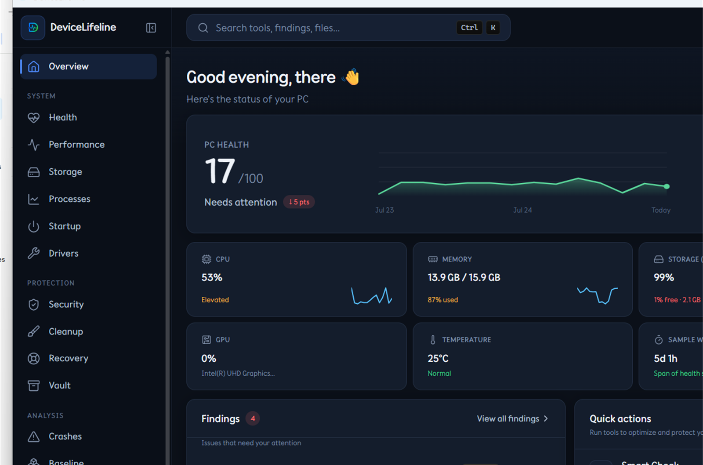
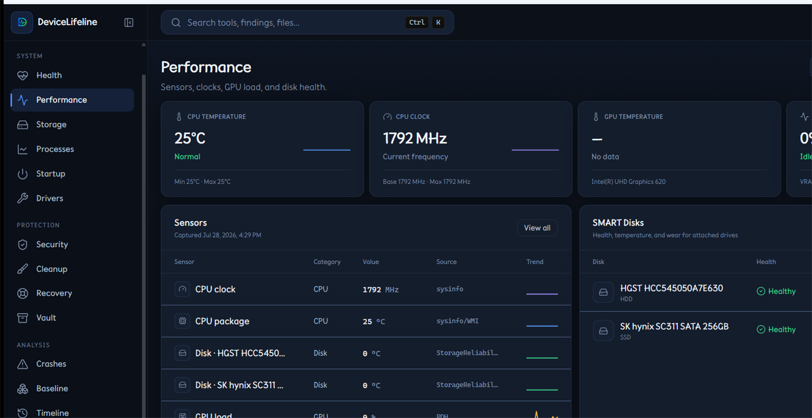

Health & Performance
Live metrics, health scores, and alerts for CPU, RAM, disk, sensors, and more.
Windows PC intelligence
The operating memory of a computer.
DeviceLifeline continuously captures your PC’s history — software, configuration, performance, health, and crashes — so you can understand what changed, fix problems in plain language, clean up safely, and recover any setup.

From the real app

Live metrics, health scores, and alerts for CPU, RAM, disk, sensors, and more.
See what’s taking space. Find large files, duplicates, and hidden clutter.
Clean with confidence using clear categories and evidence paths.
Control what runs at startup and what keeps coming back.
Inspect running processes with risk signals and context.
Turn confusing logs and crashes into plain English explanations.
Snapshots and restore plans so you can get back in minutes.
Understand. Fix. Recover.
Lightweight samples build a living record of software, config, performance, and stability — without cloud round-trips.
Health scores, crash intelligence, and Copilot connect symptoms to what actually changed on this machine.
Cleanup with evidence, driver updates via Windows Update, and recovery snapshots when you need a way back.
Install the native app, run a smart check, and open Copilot. Your history stays under your profile unless you export it.